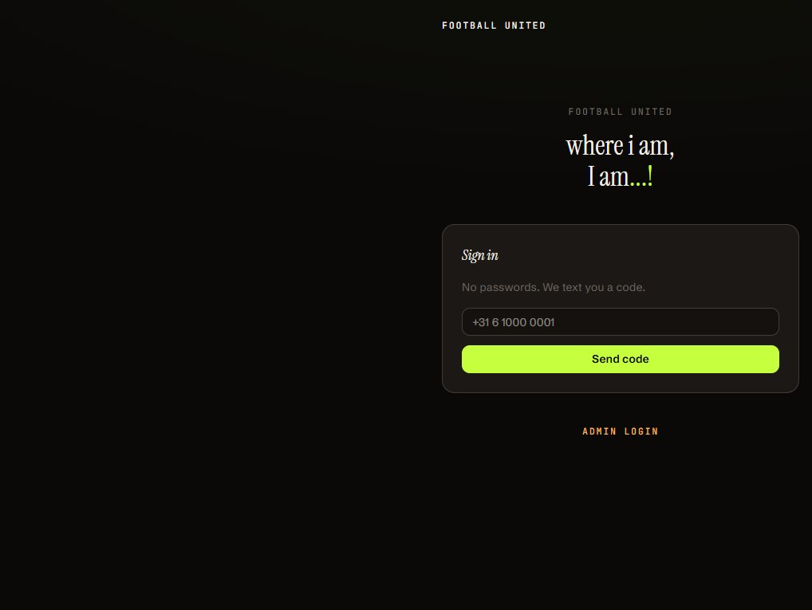

Product design · shipped
Football United
Designed and shipped a live platform for organising community football — queueing, matching, field booking, rankings and group chat. The work was turning a messy social coordination problem into one simple, repeatable flow people actually return to.
On GitHub ↗